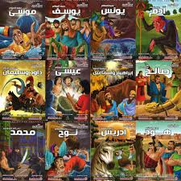
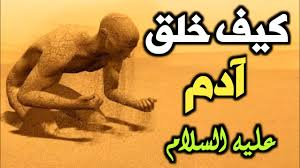
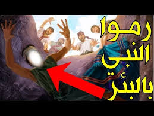
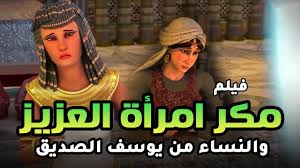
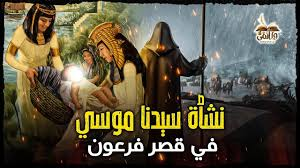

مرحبا بكم في قصتي

نبدء بقصة ادم عليه السلام

قصة خلق آدم عليه السلام
خلق الله النبي آدم من الطين وكرمه بأن سواه بيديه، ونفخ فيه من روحه، وعندما سمعت الملائكة أن الله -تعالى- يريد استخلاف آدم عليه السلام وذريته ليعمروا الأرض، استغربوا ذلك كيف يكون ممن يفسد في الأرض ويسفك الدماء، قالوا: (قَالُوا أَتَجْعَلُ فِيهَا مَن يُفْسِدُ فِيهَا وَيَسْفِكُ الدِّمَاءَ وَنَحْنُ نُسَبِّحُ بِحَمْدِكَ وَنُقَدِّسُ لَكَ) [١].[٢] وعندما أتم الله خلق آدم أمر الملائكة بالسجود له، فسجدت الملائكة كلهم استجابة لأمر الله، إلا أن إبليس وقد كان مرافقًا للملائكة لكثرة طاعته لله -تعالى- أبى أن يسجد لآدم، مستكبرًا من أن يسجد لمن خلقه الله من طين.
فكتب الله عليه لعصيانه أمر الله أن يخرج من الجنة، وأن يكون من أهل النار، فطلب إبليس من الله طلبًا في أن ينظره إلى يوم القيامة فيفتن آدم وذريته، لينظر هل يطيعون الله أم لا، فأنظره الله إلى يوم القيامة، وأخبره أنه لن يكون له سلطان على عباده
خروج آدم عليه السلام من الجنة
بكل ما فيها من نعيم، إلا شجرة واحدة عينها الله لهما، ونهاهما أن يأكلا منها مبينًا لهما أن قربهم منها سيكون فيه ظلمًا لأنفسهم، وما إن ابتعدا عنها فهما في نعيم كبير، فلا جوع سيمسهما ولا ظمأ ولا نصب. عاش آدم وحواء في الجنة في نعيم إلى أن جاء إبليس ليوسوس لهما بأن يأكلا من تلك الشجرة مقنعًا إياهما بأن الأكل من ثمارها سيجعلهما من الخالدين في الجنة. أوهم إبليس كلًا من آدم وحواء وأغراهما بالأكل من تلك الشجرة مقسمًا لهما أنه من الناصحين وأنه لن يصيبهم أي ضرر من ذلك، اغتر كل من آدم وحواء بقول إبليس، فأكلا من الشجرة، فبدت لهما سوءاتهما وأخذا يستران عليها من أوراق الجنة، وعلما أنهما قد .وقعا في المعصية. بادر آدم وحواء بالتوبة إلى الله من ذنبهما، وما نجم عنهما من الأكل من الشجرة التي نهى الله عنها، فتاب الله عليه، وكان لهذا الذنب عاقبته، وهي أن أخرج الله آدم -عليه السلام- وحواء من الجنة، ليهبطا إلى الأرض، فيعيشان وذريتهما فيها.
قصة ابني آدم
صدقة إلى الله -تعالى-، فتقبل الله صدقة هابيل؛ لصدقه وإخلاصه، بأن أكلتها النار، ولم يتقبل صدقة قابيل، فما كان من قبيل إلا أن قال لأخيه لأقتلنك، فما كان رد هابيل إلا أن قال: (إنما يتقبل الله من المتقين)، ناصحًا إياه بلوم التقوى التي هي مدعاة القبول. لكن ما كان من قابيل إلا أن قتل أخاه ظلمًا وحسدًا، فخسر دنياه وآخرته، وبعد أن قتل قابيل أخاه، لم يعرف ما يفعل بجثة أخيه، فحملها على عاتقه، إلى أن بعث الله غرابًا أمامه وأراه إياه كيف حفر حفرة لغراب ميت ودفنه فيها، فحفر لأخيه حفرة ودفنه فيها، حينها شعر قابيل بالذنب وندم على قتله لأخيه.[٥]
ۛ ּنۨــﮪــٰٱ̍ڀــۃ
قصة يونس عليه السلام
دعوة يونس لقومه
بعث الله نبيّه يونس إلى قومه الذين كانوا يعبدون الأصنام، فنهاهم عن عبادتها، ودعاهم إلى توحيد الله عزّ وجل، وبذل لهم النُّصح في تبليغ رسالة ربّه لكنهم قابلوه بالإعراض، والجفاء، والصدّ، فلمّا أحسّ يونس منهم الكفر بعد ذلك حذّرهم من سخط الله وغضبه وهدّدهم بحلول عذاب الله عليهم بعد ثلاثة أيام إن لم يؤمنوا، ثمّ خرج من بين أظهرهم غاضباً بعدما ظنّ أنّه أدّى ما عليه من تبليغ الرسالة فخرج من أرض قومه متّجهاً نحو البحر. ويبدو من النصوص الواردة في قصة يونس أنّ الله لم يأمره بهذا الخروج؛ حيث وصفه الله بالآبِق، والآبق هو العبد الهارب، قال تعالى: (إِذْ أَبَقَ إِلَى الْفُلْكِ الْمَشْحُونِ)،[١]
وكان على سيدنا يونس أن يسلّم لأمر الله، فليس لنبيٍ أن يترك بلده وقريته ويخرج أو يهاجر دون إذنٍ من الله، لذلك نهى الله رسوله -صلى الله عليه وسلم- أن يكون كصاحب الحوت في حِدّة وقلّة صبره، قال تعالى: (فَاصْبِرْ لِحُكْمِ رَبِّكَ وَلَا تَكُن كَصَاحِبِ الْحُوتِ)
ولمّا رأى قومه أمارات العذاب، وأيقنوا نزوله بهم؛ تابوا إلى الله، وندموا على تكذيبهم لرسولهم، وفرّقوا بين كلّ حيوانٍ وولده، ثمّ خرجوا يدعون الله، ويتوسّلون إليه، ويتضرّعون له، فكشف الله بحوله ورحمته عنهم العذاب الذي كان قد أُحيط بهم، وقد أخبرنا الله أنّ قوم يونس نفعهم إيمانهم بعد نزول العذاب عليهم، ورفعه عنهم بعد إحاطته بهم، قال تعالى: (فَلَولا كانَت قَريَةٌ آمَنَت فَنَفَعَها إيمانُها إِلّا قَومَ يونُسَ لَمّا آمَنوا كَشَفنا عَنهُم عَذابَ الخِزيِ فِي الحَياةِ الدُّنيا وَمَتَّعناهُم إِلى حينٍ)
يونس في بطن الحوت
لمّا خرج يونس -عليه السلام- غاضباً بسب قومه بسبب رفضهم لدعوته، سار حتى ركب سفينةً في البحر، فاضطربت براكبيها حتى كادوا يغرقون، وكان لا بدّ من إلقاء راكبٍ من ركّابها لينجو الآخرون، وما كان من حلٍّ إلا أن يقترع ركّاب السفينة، فمن خرجت قرعته أُلقي في البحر، فلما اقترعوا وقعت القرعة على يونس عليه السلام.[٦] ولقد كانوا يعرفونه فأبوا أن يلقوه في الماء، فأعادوا القرعة ثانيةً وثالثةً، فخرج سهمه أيضاً، عندها لم يجدوا بُدّاً من إلقائه في البحر، وبعث الله حوتاً فالتقمه، وطاف به البحار كلها، وأوحى الله إليه ألا يُهلك يونس عليه السلام؛ فلا يأكل لحمه ولا ينهش عظمه، وأحاطت به ظلمات ثلاث؛ ظلمة البحر، وظلمة الحوت، وظلمة الليل، ولبث في بطنه مدّة الله أعلم بها
استجابة الله لدعاء يونس
وقد سمع نبي الله يونس تسبيح الحصى ودوابّ البحر وهو في بطن الحوت، فأدرك ما استحقّ عليه اللوم، فأقبل على الله وأثنى عليه، فذكره، وسبّحه، وتضرّع إليه بأن يفرّج كربه، وألهمه الله الكلمات التي تبدّد الظلمات، وتُزيل الكربات، فنادى ربّه مسبّحاً ونادماً على ما كان منه، قال تعالى: (وَذَا النُّونِ إِذ ذَّهَبَ مُغَاضِبًا فَظَنَّ أَن لَّن نَّقْدِرَ عَلَيْهِ فَنَادَى فِي الظُّلُمَاتِ أَن لَّا إِلَـهَ إِلَّا أَنتَ سُبْحَانَكَ إِنِّي كُنتُ مِنَ الظَّالِمِينَ * فَاسْتَجَبْنَا لَهُ وَنَجَّيْنَاهُ مِنَ الْغَمِّ وَكَذَلِكَ نُنجِي الْمُؤْمِنِينَ)،[٧] وأنبت الله عليه شجرةً من يقطينٍ يستظل بها ويأكل منها، وذكر العلماء في حكمة إنبات اليقطين عليه أنّها شجرةٌ فيها نفعٌ كثير، ومقوّية للبدن، ويؤكل ثمره بكل أشكاله نيّئاً ومطبوخاً، وبقشره وببزره أيضاً، ولمّا تعافى يونس -عليه السلام- أمره الله بالعودة إلى قومه الذين غادرهم؛ فوجدهم مؤمنين بالله منتظرين عودته ليتّبعوه، فمكث معهم يُعلّمهم ويرشدهم
ۛ ּنۨــﮪــٰٱ̍ڀــۃ
قصة يوسف عليه السلام
تُعَدّ قصة يوسف عليه السلام هي إحدى قصص الأنبياء القرآنيّة التي ذُكرت أحداثها بالتفصيل؛ حيث أنزل الله -تعالى- فيها سورة كاملة منفصلة تتحدث عن قصّة نبي الله يوسف وأبيه يعقوب -عليهما السلام- وإخوته،[١] كان ليوسف -عليه السلام- مكانة كبيرة في قلب أبيه يعقوب -عليه السلام-، وقد حظي منه على حب كبير ظاهر، وقد جعل ذلك أخوته يحسدونه على ذلك الحبّ ودبّت في قلوبهم الغيرة منه، وقد جاء يوسف -عليه السلام- إلى أبيه وأخبره بأنّه رأى في منامه الشمس والقمر، كما ورأى أحد عشر كوكباً يسجدون له؛ فأمره أبوه ألّا يخبر إخوته بهذه الرؤيا خوفاً عليه منهم، كون ذلك سيزيد من حقدهم عليه وغيرتهم منه
مؤامرة الاخوة إلقاء يوسف في الجب
بئر أو هُوَّة بعيدة القَعْر.
"هَبَطَ في جُبّ"(كمعلومة)

تطوّر حقد وكره أخوة يوسف له حتّى قرروا أن يتخلّصوا منه وينفردوا بأبيهم ليصبح حبّه لهم وحدهم، حيث رأوا أنّ حبّ والدهم ليوسف -عليه السلام- وأخيه وتفضيلهما عنهم خطأ وليس من الرشد في شيئ؛ فتشاوروا بينهم على الطريقة الأفضل للتخلّص من يوسف -عليه السلام- دون أن يلومهم والدهم أو يعلم بفعلتهم؛ فاقترحوا قتله؛ فقال أحدهم أنّ إلقائه في البئر أفضل من قتله، وطلبوا من والدهم أن يسمح لهم باصطحاب يوسف معهم ليلعب؛ فرفض يعقوب -عليه السلام- ذلك بداية الأمر خوفاً من أن يأكله الذئب وهم ساهون عنه، لكنهم أقنعوه ثم خرجوا به وفي نيّتهم إلقاءه في البئر، ولما وصلوا ألقوه في البئر، ثم عادوا إلى أبيهم ليلاً يمثّلون له الحزن والبكاء على ما حصل ليوسف، وأخرجوا له قميص يوسف ملطّخاً بالدماء زاعمين أنّه قد أكله الذئب، إلّا أنّ يعقوب -عليه السلام- لم يصدقهم وقال لهم: (بَلْ سَوَّلَتْ لَكُمْ أَنفُسُكُمْ أَمْرًا ۖ فَصَبْرٌ جَمِيلٌ ۖ وَاللَّهُ الْمُسْتَعَانُ عَلَىٰ مَا تَصِفُونَ).[٣][٤]
التقاط القافلة ليوسف
بيت العزيز
ترعرع يوسف -عليه السلام- وكبر في بيت العزيز وزوجته، وحين بلغ أشدّه حاولت امرأة العزيز فتنته وأرادت أن توقعه في الفاحشة، فراودته عن نفسه واستدرجته، لكنّ يوسف -عليه السلام- تذكّر الله -سبحانه وتعالى- وتذكّر فضل العزيز عليه وقال: (مَعَاذَ اللَّهِ ۖ إِنَّهُ رَبِّي أَحْسَنَ مَثْوَايَ ۖ إِنَّهُ لَا يُفْلِحُ الظَّالِمُونَ)،[٨] فقد اعتبر يوسف -عليه السلام- فعل ذلك خيانةً وظلماً لنفسه وظلماً للعزيز الذي أكرمه وآواه في بيته، واستعاذ بالله -تعالى- من هذه الفتنة ولجأ إليه ليحصّنه منها، وهرع إلى الباب هرباً منها ولكنها لحقته وأمسكت بقميصه من الخلف فانشق في يدها، قال -تعالى-: (وَاسْتَبَقَا الْبَابَ وَقَدَّتْ قَمِيصَهُ مِن دُبُرٍ)،[٩] وحينها ظهر زوجها؛ فاشتكت يوسف -عليه السلام- إليه واتّهمته بأنّه يحاول أن يغويها.[١٠]
امرأة العزيز ومكر النسوة

وصل خبر إغواء امرأة العزيز ليوسف -عليه السلام- إلى نسوة المدينة، وبدأ الحديث يدور بينهن عمّا فعلت، وحين سمعت بما يدور بينهنّ أرادت أن تبيّن لهنّ سبب فعلتها تلك؛ فقررت إعداد سفرة من الطعام ودعوتهنّ إليها، وحين جلسن أعطت كلّ واحدة منهنّ سكيناً لاستخدامها في الأكل، ثم طلبت من يوسف -عليه السلام- أن يخرج عليهنّ، وحين ظهر ورأينه لم يصدّقن أعينهنّ من جماله، ومع ذهاب عقلهنّ في ذلك جرحن أيدينّ بالسكاكين التي معهنّ، ولم يصدّقن أنّ هذا بشر وإنما هو ملاك، قال -تعالى- واصفاً ذلك: (فَلَمَّا رَأَيْنَهُ أَكْبَرْنَهُ وَقَطَّعْنَ أَيْدِيَهُنَّ وَقُلْنَ حَاشَ لِلَّهِ مَا هَذَا بَشَرًا إِنْ هَذَا إِلَّا مَلَكٌ كَرِيمٌ)،[١١] ووقفت متعذرةً عمّا فعلته من مراودة يوسف -عليه السلام- عن نفسه، وبيّنت لهنّ أن جماله هو سبب فتنتها، وحين رأى يوسف -عليه السلام- ذلك دعا الله -تعالى- قائلاً: (قَالَ رَبِّ السِّجْنُ أَحَبُّ إِلَيَّ مِمَّا يَدْعُونَنِي إِلَيْهِ ۖ وَإِلَّا تَصْرِفْ عَنِّي كَيْدَهُنَّ أَصْبُ إِلَيْهِنَّ وَأَكُن مِّنَ الْجَاهِلِينَ).[١٢][١٣]
قرر العزيز وبعض أهله أن يضعوا يوسف -عليه السلام- في السجن على الرغم من علمهم ببراءته، وعزموا على أن يضعوه في السجن مدّة من الزمن بنيّة رد التهمة عن امرأة العزيز وتجنباً لغوايتها به مرّة أخرى.[١٤]
رؤيا صاحبي السجن وتعبيرها
دخل يوسف -عليه السلام- السجن ظلماً، وهناك التقى العديد من البشر، وقد اشتهر عنه فيما بينهم؛ بأنّه شخص صالح، صادق الحديث، كثير العبادة، كما أنّه أمين ومُحسن، ودخل في تلك الفترة فتيان؛ الأوّل ساقي الملك، والثاني خبّاز الملك، وقد رأى كلّ واحد منهما في المنام حلماً، وأتيا إلى يوسف -عليه السلام- وقصّ كل منهما خبره عليه وطلبا منه تأويل ذلك، وكان الله -سبحانه وتعالى- قد علّم يوسف التفسير، ولأن يوسف -عليه السلام- نبيّ فقد استغل هذه الفرصة ليدعوا إلى الله -تعالى-، فذكّرهما بالله -تعالى- وبوحدانيته، ودعاهما إلى عبادته وحده وترك ما يعبدون من غيره، وأورد لهم دلائل التوحيد وبراهينه ومبطلات الشرك، وقال لهم: (مَا تَعْبُدُونَ مِنْ دُونِهِ إِلَّا أَسْمَاءً سَمَّيْتُمُوهَا أَنْتُمْ وَآبَاؤُكُمْ مَا أَنْزَلَ اللَّهُ بِهَا مِنْ سُلْطَانٍ إِنِ الْحُكْمُ إِلَّا لِلَّهِ أَمَرَ أَلَّا تَعْبُدُوا إِلَّا إِيَّاهُ ذَلِكَ الدِّينُ الْقَيِّمُ وَلَكِنَّ أَكْثَرَ النَّاسِ لَا يَعْلَمُونَ).[١٥][١٦]
منامه، وكانت رؤيا الأوّل أنه يعصر الخمر بيديه ثم يقدمه لسيده؛ فكانت بشارته أنّه سيخرج من السجن ويعود إلى عمله، أمّا الآخر الذي رأى أنّه يحمل الخبز وتأكل الطيور من ذلك الخبز فوق رأسه؛ فقد أخبره بأنّه سوف يصلب عقاباً له ويبقى مصلوباً إلى أن تأكل رأسه الطيور، ثم طلب يوسف -عليه السلام- ممّن سيخرج أن يذكره عند الملك وأن يذكر بأنّه بريء من التهمة ليخرج من السجن، إلّا أنّ الفتى نسي الأمر وبقي يوسف -عليه السلام- في سجنه بضعة سنوات.[١٦]
رؤيا الملك وتعبيرها
يستمر القرآن في سورة يوسف بسرد تفاصيل هذه القصّة؛ فبعد أن لبث يوسف -عليه السلام- سنوات أخريات في السجن، رأى عزيز مصر في حُلمه أنّ هناك سبع بقرات هزيلات ضعاف يأكلن سبع بقرات كبيرات سمان، ثم رأى سبع سنبلات خضر وأخرى مثلهنّ لكن يابسات، وحين طلب من حاشيته أن يخبروه عن تفسير هذه الرؤيا اعتذروا بأنّهم لا يعلمون تفسير الرؤيا، وأنّ ذلك الحلم قد يكون مجرد خربطة أحلام، وسمع الفتى الذي كان مع يوسف -عليه السلام- في السجن ذلك وأشار عليهم بمن يفسّر لهم تلك الرؤيا، وأخبرهم أنّ يوسف قادر على تأويلها، قال -تعالى-: (وَقَالَ الَّذِي نَجَا مِنْهُمَا وَادَّكَرَ بَعْدَ أُمَّةٍ أَنَا أُنَبِّئُكُمْ بِتَأْوِيلِهِ فَأَرْسِلُونِ).[١٧][١٨] وقد فسرّ يوسف -عليه السلام- حلم العزيز وأخبرهم بأنّهم ستمّر عليهم سبع سنين فيهنّ رزق وبركة بسبب الخصب والأمطار، ونصحهم بأن يحفظوا من هذا الحصاد ما يكفيهم للسنين القادمة، وأشار عليهم بأن يتركوا الحصاد في سنبله حفظاً له من الفساد، وأن يبقوا قليلاً منه للأكل، ثمّ أخبرهم أنّ السنوات التي ستأتي بعد هذه السنين سنواتٌ سبع فيهنّ جدب وشدّة؛ فيستهلكون ما حفظوه من غلّة السنين الماضية، وبعد هذه السبع العجاف ستأتيهم سبع سنين ينزل فيها عليهم الغيث، وتخصب الأرض وتغلّ ويعصر الناس مما يخرج من الأرض من زيت وعنب ونحوه.[١٩]
براءة يوسف وخروجه من السجن
طلب الملك من حاشيته أن يأتوه بيوسف -عليه السلام- بعد أن فسّر له رؤياه، إلّا أن يوسف -عليه السلام- رفض ذلك حتى تظهر براءته للناس ويعلموا أنّه عفيف ولم يقترف شيئاً، وحتّى لا يبقى في نفس الملك على يوسف شيئاً، فقال لرسول الملك: (ارْجِعْ إِلَى رَبِّكَ فَاسْأَلْهُ مَا بَالُ النِّسْوَةِ اللَّاتِي قَطَّعْنَ أَيدِيَهُنَّ إِنَّ رَبِّي بِكَيدِهِنَّ عَلِيمٌ)،[٢٠] وحين سألهن الملك اعترفن بأنّ يوسف -عليه السلام- كان بريئاً واعترفت امرأة العزيز أنّها هي من رادوته عن نفسه، ولمّا ظهرت للملك براءة يوسف أمر بإخراجه من السجن، فخرج -عليه السلام-.[٢١]
تولية يوسف على خزائن الأرض
طلب يوسف -عليه السلام- من الملك بعد أن أخرجه من السجن وأكرمه بأن يجعله وزيراً للخزينة، فقال: (اجْعَلْنِي عَلَى خَزَائِنِ الأَرْضِ إِنِّي حَفِيظٌ عَلِيمٌ)،[٢٢] فقبل الملك ذلك وأعطاه مفاتيح الخزينة، وهذا من رحمة الله -تعالى- وتمكينه ليوسف -عليه السلام- وفضله عليه.[٢٣]
لقاء يوسف بإخوته
قدّر الله سبحانه أن يكون لقاء يوسف بأخوته في سنين الجدب، حين عمّ القحط واشتدّت السنين على الناس؛ فخرج أهل فلسطين وفيهم أخوة يوسف إلى مصر لعلهم يجدون هناك مؤونة يرجعون بها إلى أهلهم، وحين دخلوا على أخيهم يوسف -عليه السلام- وكان حينها وزيراً لم يعرفوه، ولكنّه عرفهم، وطلب منهم أن يأتوا بأخيه بنيامين، وإن امتنعوا عن ذلك فلن يعطيهم المؤونة، فرجعوا إلى أبيهم ليقنعوه وأخبروه أنّ الوزير طلب جلب أخيهم؛ ليعطيهم من المؤن، وطلبوا من أبيهم أن يأخذوا معهم بينامين لكنّه رفض بدايةً عندما تذكّر ما فعلوه بيوسف -عليه السلام- قبلاً، ثمّ فتّشوا أمتعتهم ووجدوا أموالهم ومؤنهم موجودة؛ فأخبروا أباهم بذلك وبيّنوا أنّ أخذهم لأخيهم سيزيد من المؤن التي سيحصلون عليها؛ فقبل بعد ذلك وقال لهم: (لَنْ أُرْسِلَهُ مَعَكُمْ حَتَّىٰ تُؤْتُونِ مَوْثِقًا مِّنَ اللَّهِ لَتَأْتُنَّنِي بِهِ إِلَّا أَن يُحَاطَ بِكُمْ ۖ فَلَمَّا آتَوْهُ مَوْثِقَهُمْ قَالَ اللَّهُ عَلَىٰ مَا نَقُولُ وَكِيلٌ).[٢٤][٢٥] رجع أخوة يوسف إلى مصر ودخلوا عليه ومعهم أخوه بنيامين، ولأنّه أراد أن يُبقي أخاه عنده احتال لذلك حيلة، فأمر الذين عنده أن يضعوا كأس الملك الذي يشرب به في متاع أخيه بينامين، ولمّا بدؤوا بالسير خارجين؛ نادى عليهم وكيل يوسف -عليه السلام- متهماً إياهم بالسرقة، ولكنّهم بيّنوا أنّهم لم يسرقوا، وقد أُخبروا أنّ السارق سيصير عبداً عند الملك، وحين بحث الجند في متاعهم وجدوا الكأس في متاع أخيه، فأبقاه يوسف -عليه السلام- عنده جزاء سرقته.[٢٦] ورجع أخوة يوسف إلى أبيهم وأخبروه بما حصل، وطلبوا منه أن يسأل القافلة التي كانت معهم أو أن يسأل القرية التي كانوا فيها عن صدق ما قالوا، فلم يصدّقهم وقال لهم: (بَلْ سَوَّلَتْ لَكُمْ أَنفُسُكُمْ أَمْرًا ۖ فَصَبْرٌ جَمِيلٌ ۖ عَسَى اللَّهُ أَن يَأْتِيَنِي بِهِمْ جَمِيعًا ۚ إِنَّهُ هُوَ الْعَلِيمُ الْحَكِيمُ)،[٢٧] وحزن حزناً شديداً وبكى حتى أفقده البكاء نظره، وقد لامه أولاده على كثرة ذكره ليوسف -عليه السلام-، وسلّم أمره لله -تعالى-، ثم أمر أولاده بأن يعودوا إلى مصر ويبحثوا عن إخوانهم يوسف وبينامين وأخبرهم ألّا ييأسوا من رحمة الله -تعالى-؛ فأطاعوا أبيهم وخرجوا إلى مصر مرّة أخرى.[٢٨]
تعارف الإخوة والتقاء الأسرة
رجع أخوة يوسف إليه كما أمرهم أبوهم وحين دخلوا عليه قالوا: (يَا أَيُّهَا الْعَزِيزُ مَسَّنَا وَأَهْلَنَا الضُّرُّ وَجِئْنَا بِبِضَاعَةٍ مُّزْجَاةٍ فَأَوْفِ لَنَا الْكَيْلَ وَتَصَدَّقْ عَلَيْنَا إِنَّ اللهَ يَجْزِي الْمُتَصَدِّقِينَ)،[٢٩] فرجوه أن يتصدّق عليهم ويرحم ضعف أبيهم الذي فقد بصر عينيه من فراق أبنائه، وحين علموا أنّه أخيهم يوسف طلبوا منه الاستغفار لهم، فقال: (لاَ تَثْرَيبَ عَلَيْكُمُ الْيَوْمَ يَغْفِرُ اللهُ لَكُمْ وَهُوَ أَرْحَمُ الرَّاحِمِينَ)،[٣٠] وقد أرجع يوسف -عليه السلام- فعلهم إلى جهلهم وظلمهم لأنفسهم،[٣١] ثم أعطاهم قميصه وطلب منهم أن يرجعوا إلى أبيهم ويلقوا القميص على وجهه وبشّرهم أنّه سيعود له بصره، وحين رجعوا أحسّ أبوهم بريح يوسف، وألقى البشير القميص على وجه يعقوب -عليه السلام- فعاد له بصره، وطلبوا من أبيهم الاستغفار لهم ففعل، وخرجوا جميعهم إلى مصر ليلتقوا بيوسف -عليه السلام-، وعندما دخلوا إليهم سارع إلى أبويه وأمّنهم من الخوف والقحط، وجعلهم بجانبه على العرش، وألقي إخوته له ساجدين، ولمّا رفعوا رؤوسهم ذكّر أباه برؤياه من قبل، وحمد الله -تعالى- على ما أنعمه عليه من الحرّية والمُلك، وبأن أصلح الله -تعالى- بينه وبين إخوته.[٣٢]
عظات وعبر من قصة يوسف عليه السلام
امتلأت قصّة يوسف بالعبر والمعاني التي ترفع من المستوى الإيمانيّ والأخلاقيّ والسلوكيّ للمؤمن، وقد ارتكزت هذه القصة على ثلاث محاور أساسية؛ هي الثقة بتدبير الله، والصبر على المصيبة، وترك اليأس؛ فيتوكّل العبد على الله -تعالى- ويعلم أنّ كل ما يحصل له فيه حكمة قد يعلمها وقد تخفى عنه، وهو في ذلك كلّه صابر محتسب متوكل على الله -تعالى- مستسلم لقضائه وقدره، وهو لا ييأس من تنزل رحمة الله -تعالى- عليه، فيُبقي اتّصاله بالله -تعالى- ودعاءه له حاضراً، كما يشكر الله -تعالى- دائماً، ويُرجع الفضل له أولاً وآخراً.[٣٣]
سورة يوسف عليه السلام في القرآن الكريم
تُعَدّ سورة يوسف السورة الثالثة من حيث نزولها بعد سورة الإسراء، وهي مكيّة نزلت بعد، أمّا المرتبة التي تحتلّها من حيث ترتيب النزول، فهي الثالثة والخمسون، وعدد آياتها هو مئة وإحدى عشرة آية، وقد نزلت في وقتٍ كان النبيّ -عليه الصلاة والسلام- يعاني فيه من الحزن والألم بسبب موت عمَه أبي طالب وزوجته خديجة -رضي الله عنها-، وهذه السورة كغيرها من السور التي تحتوي على القصص القرآني الذي يعدّ طريقة بيان للأسلوب الدعويّ الذي اتّبعه الأنبياء -عليهم السلام-، كما تعدّ مصدراً إلهيّاً لمعرفة أنبيائه -عليهم السلام- وقصصهم، وبهذه المعرفة تستقيم حال العبد، وتصحّ هدايته وإيمانه؛ لأنّه يتّبع الأنبياء -عليهم السلام- ويقتدي بهم عند معرفته لحقيقة ما حصل معهم.[١]
ۛ ּنۨــﮪــٰٱ̍ڀــۃ
قصّة موسى عليه السلام
ولادة موسى وانتقاله إلى قصر فرعون

وُلِد موسى -عليه الصلاة والسلام- في سنةٍ يُقتَل فيها الذكور من بني إسرائيل بأَمرٍ من فرعون ملك مِصر؛ إذ كان يقتل المواليد من الذكور في سنةٍ، ويتركهم أحياء في سنةٍ أخرى، وكان موسى قد وُلِد ولم يعلم أحد بولادته، فاهتدت أمّه من الخوف إلى أن تُلقي رضيعَها في اليمّ؛ وهو على قول المفسِّرين جميعهم نهر النيل، وذلك بعد جَعْله في تابوتٍ، وذلك بأَمرٍ من الله، مع طمئنته لها بأنّه سيُرجعه إليها سالماً مُعافىً، وسار الماء بموسى -عليه السلام- إلى أن وصل إلى أيدي جواري قصر فرعون، فأخذنه إلى امرأة فرعون؛ آسية بنت مُزاحم التي طلبت من زوجها فرعون أن يُبقيَ عليه معها؛ ليتّخذوه ولداً لهم، فينفعهم حين كِبر سِنّهم، وكانت أمّه قد أرسلت أخته؛ لتتبُّع أمره، وأثره، وكان قد رفض المُرضعات جميعهم، فأرشدتهم أخته إلى أمّه؛ لتُرضعَه، وبذلك تحقّق وعد الله -سبحانه- لأمّ موسى بإرجاع ولدها إليها.[١]
حادثة قتل القبطيّ
دخل موسى -عليه السلام ذات يومٍ إلى المدينة في وقت خُلوّ الناس منها، وصادف رجلَين يقتتلان؛ أحدهما من القِبط، والآخر من بني إسرائيل، فطلب الذي من بني إسرائيل منه النُّصرة، فأجابه موسى، فوكز القبطّي، وعلى الرغم من أنّ موسى -عليه السلام- لم يقصد قَتله، إلّا أنّ الوَكز صادفَ انتهاء أجله، فمات، ووقع القَتل خطأً، فتوجّه موسى إلى ربّه بالتوبة، والاعتراف بالذَّنب، وطلب المغفرة منه؛ فقد ظلم نفسه بفِعله ذاك؛ إذ كان القتل بسبب شدّة غضبه، وكان بإمكانه تمالك نفسه عند الغضب، فغفر الله له، ثمّ أصبح موسى -عليه الصلاة والسلام- نصيراً وظهيراً للحَقّ وأهله، إلّا أنّ خبر مَقتل القبطيّ على يد موسى لم ينتشر في المدينة؛ لأنّ القَتل وقع وقت الراحة.[٢]
بقي موسى -عليه السلام- يترقّب ما سيحلّ بأمره، ثمّ لقي الرجل الذي استنصرَه في اليوم السابق يقتتل مع قِبطيّ آخر، فطلب من موسى -عليه السلام- أن ينصره عليه، فزَجَره القِبطيّ عن البَطش والإفساد، وحَثّه على السَّعي في تحقيق التراضي بين الطرفَين، فرفض موسى قَتل القِبطيّ، ثمّ أرشده رجلٌ إلى الخروج من المدينة؛ خوفاً عليه من الانتقام للقبطيّ الذي قَتَله سابقاً، فخرج موسى مُتوجِّهاً إلى مدين، قال -تعالى-: (وَدَخَلَ الْمَدِينَةَ عَلَى حِينِ غَفْلَةٍ مِّنْ أَهْلِهَا فَوَجَدَ فِيهَا رَجُلَيْنِ يَقْتَتِلَانِ هَـذَا مِن شِيعَتِهِ وَهَـذَا مِنْ عَدُوِّهِ فَاسْتَغَاثَهُ الَّذِي مِن شِيعَتِهِ عَلَى الَّذِي مِنْ عَدُوِّهِ فَوَكَزَهُ مُوسَى فَقَضَى عَلَيْهِ قَالَ هَـذَا مِنْ عَمَلِ الشَّيْطَانِ إِنَّهُ عَدُوٌّ مُّضِلٌّ مُّبِينٌ*قَالَ رَبِّ إِنِّي ظَلَمْتُ نَفْسِي فَاغْفِرْ لِي فَغَفَرَ لَهُ إِنَّهُ هُوَ الْغَفُورُ الرَّحِيمُ*قَالَ رَبِّ بِمَا أَنْعَمْتَ عَلَيَّ فَلَنْ أَكُونَ ظَهِيرًا لِّلْمُجْرِمِينَ*فَأَصْبَحَ فِي الْمَدِينَةِ خَائِفًا يَتَرَقَّبُ فَإِذَا الَّذِي اسْتَنصَرَهُ بِالْأَمْسِ يَسْتَصْرِخُهُ قَالَ لَهُ مُوسَى إِنَّكَ لَغَوِيٌّ مُّبِينٌ*فَلَمَّا أَنْ أَرَادَ أَن يَبْطِشَ بِالَّذِي هُوَ عَدُوٌّ لَّهُمَا قَالَ يَا مُوسَى أَتُرِيدُ أَن تَقْتُلَنِي كَمَا قَتَلْتَ نَفْسًا بِالْأَمْسِ إِن تُرِيدُ إِلَّا أَن تَكُونَ جَبَّارًا فِي الْأَرْضِ وَمَا تُرِيدُ أَن تَكُونَ مِنَ الْمُصْلِحِينَ*وَجَاءَ رَجُلٌ مِّنْ أَقْصَى الْمَدِينَةِ يَسْعَى قَالَ يَا مُوسَى إِنَّ الْمَلَأَ يَأْتَمِرُونَ بِكَ لِيَقْتُلُوكَ فَاخْرُجْ إِنِّي لَكَ مِنَ النَّاصِحِينَ*فَخَرَجَ مِنْهَا خَائِفًا يَتَرَقَّبُ قَالَ رَبِّ نَجِّنِي مِنَ الْقَوْمِ الظَّالِمِينَ).[٣][٢]
موسى في مَدْين
انطلق موسى -عليه السلام- من مِصْر قاصداً مَدْيَن، ونزل في مكانٍ اجتمع الناس فيه؛ للسقاية، ورأى فتاتَين واقفتَين تنتظران سقاية أغنامهما، فأقبل عليهما موسى -عليه السلام-، واستفسر منهما عن سبب وقوفهما، فأجابتاه بأنّهما تنتظران السقاية؛ إذ إنّ أبوهما شيخٌ كبيرٌ لا يقوى عليها؛ فسقى لهما موسى، وقضى حاجتهما، ثمّ توجّه إلى الله -تعالى- بالدعاء والطلب، بينما قصّت الفتاتان على والدَيهما ما حدث معهما، وطلب من إحديهما إحضار موسى؛ لشُكره على فِعله، فطلبت منه المُضيّ معها، وكانت شديدة الحياء، فشكره الشيخ على صنيعه مع ابنتَيه، وكانت قد اقترحت إحداهما استئجار موسى -عليه السلام-؛ للسقاية، فعرض الشيخ على موسى أن يُزوّجه إحدى ابنتَيه مقابل العمل في السِّقاية مدّة ثمانية أعوامٍ، وإن أراد زيادة سنَتَين من عنده، ففَعل موسى، وقضى تلك المدّة كاملةً، ثمّ توجّه عائداً إلى مصر؛ قال -تعالى-: (وَلَمَّا وَرَدَ مَاءَ مَدْيَنَ وَجَدَ عَلَيْهِ أُمَّةً مِّنَ النَّاسِ يَسْقُونَ وَوَجَدَ مِن دُونِهِمُ امْرَأَتَيْنِ تَذُودَانِ قَالَ مَا خَطْبُكُمَا قَالَتَا لَا نَسْقِي حَتَّى يُصْدِرَ الرِّعَاءُ وَأَبُونَا شَيْخٌ كَبِيرٌ*فَسَقَى لَهُمَا ثُمَّ تَوَلَّى إِلَى الظِّلِّ فَقَالَ رَبِّ إِنِّي لِمَا أَنزَلْتَ إِلَيَّ مِنْ خَيْرٍ فَقِيرٌ*فَجَاءَتْهُ إِحْدَاهُمَا تَمْشِي عَلَى اسْتِحْيَاءٍ قَالَتْ إِنَّ أَبِي يَدْعُوكَ لِيَجْزِيَكَ أَجْرَ مَا سَقَيْتَ لَنَا فَلَمَّا جَاءَهُ وَقَصَّ عَلَيْهِ الْقَصَصَ قَالَ لَا تَخَفْ نَجَوْتَ مِنَ الْقَوْمِ الظَّالِمِينَ*قَالَتْ إِحْدَاهُمَا يَا أَبَتِ اسْتَأْجِرْهُ إِنَّ خَيْرَ مَنِ اسْتَأْجَرْتَ الْقَوِيُّ الْأَمِينُ*قَالَ إِنِّي أُرِيدُ أَنْ أُنكِحَكَ إِحْدَى ابْنَتَيَّ هَاتَيْنِ عَلَى أَن تَأْجُرَنِي ثَمَانِيَ حِجَجٍ فَإِنْ أَتْمَمْتَ عَشْرًا فَمِنْ عِندِكَ وَمَا أُرِيدُ أَنْ أَشُقَّ عَلَيْكَ سَتَجِدُنِي إِن شَاءَ اللَّـهُ مِنَ الصَّالِحِينَ*قَالَ ذَلِكَ بَيْنِي وَبَيْنَكَ أَيَّمَا الْأَجَلَيْنِ قَضَيْتُ فَلَا عُدْوَانَ عَلَيَّ وَاللَّـهُ عَلَى مَا نَقُولُ وَكِيلٌ).[٤][٥]
بعثة موسى عليه السلام
عاد موسى -عليه السلام- إلى مصر مع أهله، وأخذ يبحث عن نارٍ ليلاً، فلم يجد، إلى أن رأى ناراً إلى جانب جبلٍ، فسار إليها وحده تاركاً أهله في موضعهم، ثمّ سَمِعَ صوتاً يُناديه حين وصوله إلى موضع النار، فكان الله -سبحانه- يُكلّمه؛ إذ أخبره أنّه ربّ العالَمين، وأنّه اصطفاه؛ ليبلّغَ الناس، ويدعوهم إلى توحيد الله، ويخبرهم أنّ يوم القيامة واقعٌ لا محالة؛ ليُجازى كلّ عبدٍ بما قدَّمَ في حياته، ثمّ سأله ربّه -عزّ وجلّ- عن العصا التي يُمسكها -وهو أعلم بها-، فأجابه -عليه السلام- بأنّه يعتمد عليها في رَعْي الغنم، وأمورٍ أخرى، فطلب منه -سبحانه- إلقاءها، فألقاها، فتحوّلت إلى حيّةٍ تسعى بأمرٍ وتقديرٍ من الله، ففزع موسى، إلّا أنّ الله طمأنَه وأخبره أنّه سيُرجعها كما كانت، ثمّ أمره الله -سبحانه- أن يُدخلَ يدَه في جَيْبِه، فأدخلها، فإذا بها تخرج بيضاء مُنيرةً، فأعادها إلى جبيه، فعادت إلى صِفتها الأولى.[٦]
وقد أجرى الله -سبحانه وتعالى- عدّة آياتٍ مُعجزات تُؤيّد رسالة نبيّه موسى -عليه السلام-، ثمّ أمره بالتوجُّه إلى فرعون مُبلِّغاً، وداعياً إيّاه إلى توحيد العبادة لله وحده، واتِّباع أوامره، فسأله موسى التيسير، وانشراح الصدر، وأن يُعينه؛ بإرسال أخيه هارون معه، فاستجاب له -سبحانه-، وبذلك كان موسى رسول الله ومُبلِّغَ أوامره إلى فرعون، وقومه؛ قال -تعالى-: (وَما تِلكَ بِيَمينِكَ يا موسى*قالَ هِيَ عَصايَ أَتَوَكَّأُ عَلَيها وَأَهُشُّ بِها عَلى غَنَمي وَلِيَ فيها مَآرِبُ أُخرى*قالَ أَلقِها يا موسى*فَأَلقاها فَإِذا هِيَ حَيَّةٌ تَسعى*قالَ خُذها وَلا تَخَف سَنُعيدُها سيرَتَهَا الأولى*وَاضمُم يَدَكَ إِلى جَناحِكَ تَخرُج بَيضاءَ مِن غَيرِ سوءٍ آيَةً أُخرى*لِنُرِيَكَ مِن آياتِنَا الكُبرَى*اذهَب إِلى فِرعَونَ إِنَّهُ طَغى*قالَ رَبِّ اشرَح لي صَدري*وَيَسِّر لي أَمري*وَاحلُل عُقدَةً مِن لِساني*يَفقَهوا قَولي*وَاجعَل لي وَزيرًا مِن أَهلي*هارونَ أَخِي*اشدُد بِهِ أَزري*وَأَشرِكهُ في أَمري).[٧][٨]
مُواجهة موسى لفرعونَ
وصل موسى إلى أرض مِصْر، والتقى بأخيه هارون، واتّجها إلى قَصْر فرعون الذي أَذِن لهما بالدخول، وبدأ موسى يدعوه إلى توحيد الله، والخضوع له وحده، والتوقُّف عن ظُلم بني إسرائيل، وإرسال بني إسرائيل معهما، فرفض فرعون ذلك، واستخفّ بقَوْل موسى -عليه السلام-، واستصغرَه، وذكّرَه بتربيته ورعايته له، وأنّه قابل ذلك بقَتْل القِبطيّ، فكان ردّ موسى عليه أنّ ذلك لم يكن عن قَصْدٍ، وبيّنَ له أنّه رسول الله إليه مع أخيه هارون، فسألهما عن ربّهما، فأجاباه أنّه الله مالك المُلك، وخالق كلّ شيءٍ، فاستخفّ فرعون بجوابهما، واستهان بما قالاه، والتفت إلى قومه؛ مُكذِّباً قَوْل موسى، ومُتَّهِماً إيّاه بالجنون، فكان ردّ موسى أنّ الله خالقُهم، وخالقُ آبائهم، وأظهرَ لهم المعجزات التي أيّده الله بها؛ لتكون دليلاً على صِدقه، فتعجّبَ فرعون ممّا رأى، وطلب رأي قومه ومشورتهم، فأخبروه أنّ موسى وهارون ساحران يريدان الاستحواذ على مُلكه، وإبعاده عن أرضه، وأرشدوه إلى جَمع السَّحَرة، وإبطال سِحرهما.[٨]
مُواجهة موسى للسَّحَرة
اجتمع فرعون بالسَّحرة، وأخبرهم بما رآه من معجزات موسى، وسألهم عمّا يُمكنهم فِعْله؛ لإبطال ما جاء به موسى، فأخبروه بأنّهم سيغلبونه بسِحْرهم، وطلبوا منه الأجر، فأكّدَ لهم أنّهم سيكونون مُقرَّبين منه، ومأجورين، فلمّا أتى موسى، ورمى عصاه، لم يلبث السَّحرة كثيراً حتى آمنوا بربّ موسى وهارون؛ لأنّهم عرفوا أنّ ما كان من موسى ليس سحراً، ولا يفعله إلّا نبيٌّ، فغضب فرعون غضباً شديداً منهم، وادّعى أنّ موسى -عليه السلام- مَن عَلّمَهم السِّحر، وأنّهم تابعون له، فأمر بصَلْب السَّحَرة، واستمرَّ فرعون في إنكار ما جاء به موسى -عليه السلام-، فأمرَ وزيره هامان أن يبنيَ له قصراً عالياً شاهقاً؛ ليصل به إلى أبواب السماء، ويرى إله موسى.[٩]
وكان قد أسلم مع موسى وهارون بنو إسرائيل، فأمرهم الله -تعالى- أن يسكنوا بيوتاً في مصر، وأمره أن يَعِظ مَن آمن معه، ويُبشّرَهم بما ينتظرهم من نَعيمٍ في الآخرة، ثمّ همَّ فرعون بقَتْل نبيّ الله موسى؛ مُدّعِياً الخوف عليهم من أن يُخرجهم من دينهم، وينشرَ في الأرض الفساد، إلّا أنّ مؤمناً من آل فرعون كان يُخفي إيمانه استنكر ذلك، وقال إنّ موسى جاء بالبيّنات من ربّه؛ فإن كان صادقاً فإنّ الشرَّ سيُصيبهم، وإن كان كاذباً فسيُظهر الله كذبَه، ولن يضرَّهم ذلك، قال -تعالى-: (وَقَالَ رَجُلٌ مُّؤْمِنٌ مِّنْ آلِ فِرْعَوْنَ يَكْتُمُ إِيمَانَهُ أَتَقْتُلُونَ رَجُلًا أَن يَقُولَ رَبِّيَ اللَّهُ وَقَدْ جَاءَكُم بِالْبَيِّنَاتِ مِن رَّبِّكُمْ ۖ وَإِن يَكُ كَاذِبًا فَعَلَيْهِ كَذِبُهُ ۖ وَإِن يَكُ صَادِقًا يُصِبْكُم بَعْضُ الَّذِي يَعِدُكُمْ ۖ إِنَّ اللَّهَ لَا يَهْدِي مَنْ هُوَ مُسْرِفٌ كَذَّابٌ)،[١٠] فتراجع فرعون عن قَتْل موسى -عليه السلام-، إلّا أنّه استمرّ في تخويف أتباع موسى -عليه السلام-، وظلمهم.[٩]
طلب موسى -عليه السلام- من قومه أن يصبروا، ويتمسّكوا بحبل الله؛ فهو القادر على أن يُهلك فرعون، وقومه، إلّا أنّ فرعون تجاوز الحدَّ في ظُلمه، وطُغيانه؛ فدعا موسى وهارون على فرعون وأعوانه بأن يُبدّدَ أموالهم، ويطبعَ على قلوبهم؛ فلا يؤمنوا حتى يَرَوا العذاب الأليم، فاستجاب الله لدعائهم، إلّا أنّ فرعون زاد في إصراره على الظُّلم، والاستكبار بغير الحقّ، فابتلاهم الله باحتباس المَطر، ونَقص المحاصيل، ولم يزدادوا إلّا تكبُّراً ورَفْضاً لرسالة الحقّ؛ فأرسل الله -تعالى- عليهم الطوفان، والجراد، والقمّل، والضفادع، والدم، وكانت تأتيهم آيات العذاب مُتتالِيةً.[٩]